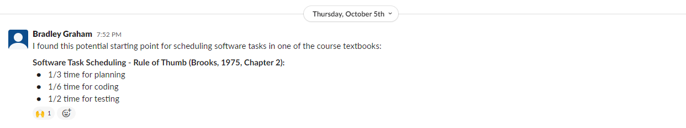

Week 3
Reading
The main reading of the week was chapters 1-5 of 'The Mythical Man-Month' by Brooks, P. (1975). This book had been praised highly for the information it contains; but what actually jumped out to me was it's creative, essay-like manner, and use of illustrations. The information is critically examinable, but it's quite likely to be outdated. The most notable idea I personally pulled from the book was the classification of project tasks by partionability. I think its a valuable consideration when modelling the expected flow of project tasks, because it reveals an otherwise hidden problem, and therefore minimises risk. But as an aspiring project manager, I rated this textbook as having more historical merit than contemporary application. In the information era of today, there are books with decades of empirical backing, which the Mythical Man-Month does not have.
Group Project
This was my proposal for the projects schedule, deriving from both Agile and Spiral SDLCs.

The longer cycles facilitate larger architectural flexibility, without the project flow being too sensitive to any of the individual shorter cycles. The flavours of shorter cycle aim to reduce risk in much the same way as the Spiral model, while the 4 week prototype constraint, means prototypes are developed frequently for stakeholders. This conscience is one of Agile's four main values.